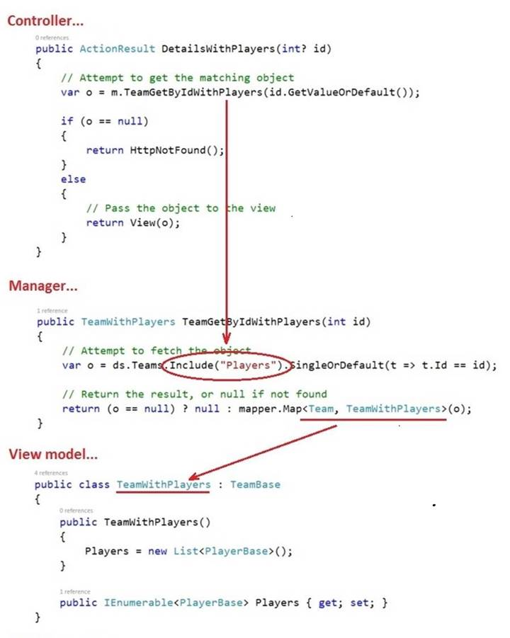
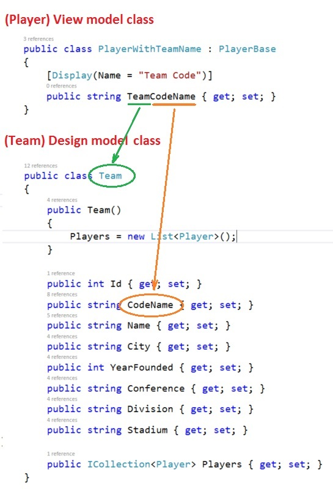

INT422 – Lecture 4
Associations - Working with associated (related) entity objects.
Test today
Test 3 is today.
We will have the test at the beginning of the timeslot, and will run approximately 18 minutes.
As you have learned, all tests in this course are hand-written. Pen or pencil. Answer styles will vary, but we’re mostly looking for short- to medium-length answers, and/or diagrams, and so on. No references or resources are permitted – “closed book, open brain”.
The tested topics are mostly forward-looking. You will be tested on comprehension, understanding, and the application of the current week’s topics. It is possible that you may be tested on a recently-covered topic, which enables you to show that you have the foundational knowledge needed for current and future tasks.
Textbook coverage
As announced last week, the textbook will have a supporting role as you learn new topics from these notes and your classroom sessions. Use the table-of-contents and the index to locate the topic, and then read about it there. A reminder: The textbook does not use view model classes in its discussions and code examples. We do.
Homework reminder
In the last class, your teacher may have assigned homework, to complete the “pattern summary” quick reference document. Please complete that task, and submit it to Blackboard before the end of Saturday of week 4.
Advice about success in this course
We have completed about one-quarter of the course. We hope that you’ve enjoyed it so far.
While checking and marking your work, your professor has noticed some good work, but also some indicators of poor scholarship among the work that has earned low grades. This section of the notes has advice on how to improve.
The following advice is for every student in the course. It will also work for other courses in our software development programs. Here’s the advice:
Prepare
Prepare before every class. Your professor expects you to have read and studied the notes, including the linked and recommended readings. You must perform some learning activities before class. You don’t need your professor to verbally dictate content that you can consume better and more efficiently on your own. Therefore, make it a habit to prepare before class.
Readings are important. It is impossible to learn what you need to learn in this course, by simply listening to your professor talk for ninety minutes each week. It is also impossible to learn what you need to learn simply by writing code, and ignoring all of the good advice and best practices that are communicated to you through the readings.
The way you work through the content is important. Don’t just move your eyes over the content, with the support of a partially-engaged and distracted brain. Instead, read critically, concentrate, and think as you read. Read the difficult or challenging topics out loud (with your speaking voice!). Look up words or terms that are unfamiliar. Open and study the code examples (using Visual Studio), while you are working through the content. Follow the links to the linked material, and work through that too. Write down questions that you need answers to (and follow up by asking your professor or someone else in your support-and-learning network).
Review
Review the course content. Every week. How?
Schedule a regular time to do this work. You have an appointment calendar on your computer or phone – use it. When? Whatever works for your schedule, but it may be useful to do this activity on Monday or Tuesday, because you will recall techniques and best practices that will be useful as you work on that week’s assignment. Also, it will help you “study” for the regular Tuesday/Wednesday test.
Review the material in sequence. Two sequences could work: New-to-old, or old-to-new. In other words, you could start with the most recent material, and work backwards, day by day, to the oldest material. Alternatively, you could start with the oldest material, and work forwards to the current material.
Is there a benefit to a regular review? Yes. Ask yourself a question, and answer it honestly: Have you ever read something technical for a second (or third) time, and “discovered” the real meaning of something that you know you have read before? The answer will always be “yes”. It’s natural, and it’s part of being human.
Some students establish a “study group” with a few classmates. That’s a good practice. Quiz each other. Have each member be responsible for digging deep into a specific topic, and reporting the results to the others.
Resources
Use the recommended resources. There’s “gold” in the resources. Don’t ignore the resources that you think are too dense, or technical, or boring. Read them. Re-read them. If you begin to read content that’s unfamiliar, or beyond your current level of knowledge or understanding, you should still skim/read it. That way, when you later raise your level of knowledge and understanding, you will remember the material, and can handle it.
Assignments
When working on the programming assignments…
Follow instructions.
Make a “coding plan” before you begin writing code. Whatever form works for you, use it. (Flowchart, pseudocode, comments inside empty methods/classes, English-like statements, boxes-and-arrows – whatever works for you.)
Do not copy-paste code, hoping that it will work. Write your code without using copy-paste. Later, when you realize that you are writing and repeating the same code as before, then you can consider using copy-paste. And, you should look for opportunities to refactor your code.
Tests
When working on the weekly tests…
Understanding a test question is important. Make sure you are answering the question, and not some other question. Ask your professor – during the test – if you’re unsure. (For best results, come up to the front of the room, to the professor, to ask your question. That way, you’ll have some privacy.)
Understanding the question format is important too. Our questions are conversational in nature. They skew towards applying the knowledge you’re learning. They’re never trivial. The overall goal is to help you become a better explainer, in writing, and verbally. That will pay off in future work/career opportunities.
Code examples
Associations – One to many
Theme for today
In past weeks, we have been working with single standalone entities.
Today, we begin to work with associated entities, and learn the design and coding patterns.
Associated (related) data introduction
As you begin learning this topic and concept, please remember that we are working with data in memory. While the source of the data is often a database, and the destination is an HTML document, we do not care about those factors. Instead, we focus on working with data in memory.
❝This is important. We do not care about foreign keys, joins, and so on.
When working with data in memory, we are working with objects and collections of objects, and LINQ.
Real-life and software objects can have associations (or relationships) between them. There are several kinds of associations that we will work with:
One to many
You will often model real-life objects that have associations with other objects, in a one-to-many relationship.
For example:
Looking at the other side of the association:
Many to many
In real life, there are many situations that have a many-to-many association.
Consider your role as a student here at Seneca:
Now, think about the faculty employees here in the School of ICT:
The others – one to one, self-referencing to-one and to-many
We will cover these kinds of associations in the near future, likely next week.
Are associations always required?
When you are writing entity classes, are associations required between or among all classes?
No.
It is not necessary to associate every class to another. This technique is often used for data that is used for lookup or validation purposes.
Declaring a navigation property
When writing data classes, the associations are simply coded as properties. However, they’re called “navigation properties“.
❝Definition reminder…
A navigation property has a data type of another class in the model.
ALWAYS add a navigation property to both associated classes.
Declare a to-one navigation property with the data type of the associated class. For example if a Product is sold by a single Supplier:
[Required]
public Supplier Supplier { get; set;
}
Declare a to-many navigation property with a collection type of the associated class. For example, a Supplier sells a number of Product items:
// In a
design model class...
public ICollection<Product>
Products { get; set; }
// In a view model class...
public
IEnumerable<Product> Products { get;
set; }
(Remember, whenever you declare a collection property, you MUST initialize it in a default constructor, most often as a List<TEntity>.)
Setting the value of a navigation property
Before setting the value of a navigation property, you must have a reference to an object (of that data type). Although you can create a new object in the statement, you will often have another existing variable for (or is a reference to) the object.
Set a to-one property as follows. Assume that “walmart” is a Supplier object, and “shirt” is a Product object:
// shirt is a Product object
// walmart is a Supplier object
shirt.Supplier = walmart;
Setting a to-many property requires some thought. Do you want to add a new object to the collection? Do you want to replace the existing collection with a new collection? Here are some examples, using the same “walmart” and “shirt” objects, but we also have a collection of toaster objects named “toasters”:
// add a new object to the collection
walmart.Products.Add(shirt);
// replace the existing
collection with a new collection
walmart.Products = toasters;
Important: When you write a statement in code to set one end of the association, do you need to write another statement to set the other end?
When we use a persistent store (SQL Server via the Entity Framework), NO, when we use a persistent store (SQL Server via the Entity Framework), we don’t have to. In this scenario, when you set one end of the association, the persistence framework sets both ends of the association.
Getting (reading) the value of a navigation property
Getting the value of a navigation property is natural and simple. Just pay attention to data types (an object, or a collection of objects).
Also, when you have a to-one association, it’s easy to “walk” the object graph to get access to properties in the associated object. For example, using the “shirt” object from above, you could get the “Name” or “Address” of the supplier:
string supplierName =
shirt.Supplier.Name;
How to design your view model
classes
so that they include an associated object or collection
At this point in time, you have learned how classes can be associated with one another, by using navigation properties.
What about view model classes?
Well, we use navigation properties in any class that describes a real-world object – design model class, or view model class.
Do we add navigation properties to ALL view model classes?
No.
Add them only when it makes sense. Often, the “Base” view model class is intended to hold all, or almost all, of the properties defined in the design model class. You may be tempted to add a navigation property to the “Base” class. Resist that temptation.
Instead, create another view model class, with the desired navigation property. It’s OK to use inheritance to simplify coding.
Let’s look at three scenarios from the code example. The problem domain is a one-to-many association, of recent National Football League playoff teams, and players. A Team has a collection of Players. Conversely, a Player belongs to a Team.
This view model class uses the familiar “Base” style, for the Team entity. For clarity, the data annotations were removed.
public class TeamBase
{
public TeamBase() { }
public int Id { get; set; }
public string CodeName { get; set; }
public string Name { get; set; }
public string City { get; set; }
public int YearFounded { get; set; }
public string Conference { get; set; }
public string Division { get; set; }
public string Stadium { get; set; }
}
The following is the recommended way to add the navigation property for the collection of Player objects. Notice the name of the view model class, and that it inherits from “Base”. Notice also that the collection type, in a view model class, is IEnumerable<TEntity>. Two more items to notice:
public class TeamWithPlayers : TeamBase
{
public TeamWithPlayers()
{
Players = new List<PlayerBase>();
}
public IEnumerable<PlayerBase> Players { get; set; }
}
The next view model class uses the familiar “Base” style, for the Player entity. For clarity, the data annotations were removed.
public class PlayerBase
{
public PlayerBase()
{
BirthDate = DateTime.Now.AddYears(-25);
}
public int Id { get; set; }
public int UniformNumber { get; set; }
public string PlayerName { get; set; }
public string Position { get; set; }
public string Height { get; set; }
public int Weight { get; set; }
public DateTime BirthDate { get; set; }
public int YearsExperience { get; set; }
public string College { get; set; }
}
The following is the recommended way to add the navigation property for a single object - the Team object. Notice the name of the view model class, and that it inherits from “Base”. Three more items to notice:
public class PlayerWithTeamInfo : PlayerBase
{
[Required]
public TeamBase Team { get; set; }
}
AutoMapper and associated data
This is a good-news story.
If you define (create) maps from design model classes to view model classes that have navigation properties, AutoMapper will work the same way that it does for other data types.
In other words, AutoMapper works nicely with associated entities. The notes below discuss three scenarios:
The scenarios below echo the guidance in the previous section (above).
For an object, mapping an associated collection
If you have an entity that has an associated (related) collection – for example, a Program has a collection of Subjects, or a Supplier has a collection of Products, or a Team has a collection of Players – you may want to return an object with its associated collection.
To do this, you need to do four tasks:
1. In a new view model class, add a navigation property for the collection. The type is a view model class type. The property name must match the property name in the design model class.
2. Define a map, from the design model class to the new view model class that you created in step 1 above.
3. In the manager, when the code fetches the object, add the Include() extension method to fetch its associated collection.
4. In the controller, add a method that will call the manager method.
Here’s how these code changes work together. Click to open it in a new tab/window:

For an object, mapping an associated object
If you have an entity that has an associated entity – for example, a Subject is associated with a single Program – you may want to return an object with its associated object.
To do this, you need to do four tasks:
1. In a new view model class, add a navigation property for the object. The type is a view model class type. The property name must match the property name in the design model class.
2. Define a map, from the design model class to the new view model class that you created in step 1 above.
3. In the manager, when the code fetches the object, add the Include() extension method to fetch its associated object.
4. In the controller, add a method that will call the manager method.
AutoMapper “flattening” feature
It is a common scenario to add a navigation property for a single object, e.g. add the Team object to the PlayerWithTeamInfo view model class:
public class PlayerWithTeamInfo : PlayerBase
{
[Required]
public TeamBase Team { get; set; }
}
However, sometimes you do not want, or need, all properties from the associated object. Instead, you need only one or two properties from the associated object.
AutoMapper has a feature called “flattening” which helps with this scenario. For example, assume that we want only the Team’s “Name” and “CodeName” properties. Create new properties, with a composite name, Class + Property Name. The data type must match the data type of the property in the design model class.
Here’s what it looks like:
public class PlayerWithTeamNames : PlayerBase
{
// Design model class name is "Team"
// Property names are "CodeName" and "Name"
public string TeamCodeName { get; set; }
public string TeamName { get; set; }
}
Mapping some individual properties of a related object (in a ‘to-one’ association)
If you have an entity that has an associated object – for example, a Subject belongs to a Program, or a Product belongs to a Supplier – you may want to return individual properties from its associated object.
To do this, you need to do four tasks:
1. In a new view model class, add a property with a type that matches the property in the associated type. The property name must be a composite of the design model class name and the property name.
2. Define a map, from the design model class to the new view model class that you created in step 1 above.
3. In the manager, when the code fetches the object, add the Include() extension method to fetch its associated object.
4. In the controller, add a method that will call the manager method.
Here’s how these code changes work together. Click to open it in a new tab/window:

Displaying associated data in a view
Study the code example (AssocOneToMany), as you review this section.
In a controller method (get all, get one), the code will call a manager method, which will return a package of data that’s described by a view model. For example, the “get one” will return a Team object, that includes a (nested) collection of Player objects.
Study the DetailsWithPlayers() method. It passes the fetched object to the view. The view was scaffolded by using the normal/standard Details template. Then, it was edited.
The Visual Studio scaffolder will handle simple properties correctly.
However, the scaffolder will not render HTML for other data types. Therefore, we must usually add code to the views. That’s OK, and normal.
Study the DetailsWithPlayers view. Notice that more code was added, near the bottom:
<dt>
@Html.DisplayNameFor(model => model.Players)
</dt>
<dd>
@foreach (var p in Model.Players)
{
var player = string.Format("{0} ({1}), # {2}", p.PlayerName, p.Position, p.UniformNumber);
<span>@player</span><br />
}
</dd>
Cool, yes? For each object in the Players collection, render some HTML.
Displaying an associated individual/single object
Now, consider the other end of the to-one association.
A Player object has a to-one association with a Team object. In other words, a player is on only one team at a time. In the players controller, there are two “get all” players methods that fetch team data. One fetches the Team object itself (…WithTeamInfo), while the other fetches some data, using AutoMapper flattening (…WithTeamName). Each method has its own view.
Study the …WithTeamInfo view first. Yes, there’s an HTML table header element, but look in the “foreach” code block. There’s a new element, which dereferences the player’s Team object, to get its CodeName (i.e. the abbreviated team name/characters):
<td>
@Html.DisplayFor(modelItem => item.Team.CodeName)
</td>
Now, study the …WithTeamName view. The view model class is different from the previous example, in that it has a flattened string property for the team name, instead of the object itself.
<td>
@Html.DisplayFor(modelItem => item.TeamCodeName)
</td>
Note: this HTML code is rendered by the Visual Studio scaffolder. But the similar code above in the …WithTeamInfo view is not supported by the scaffolder.
Query techniques
This section will introduce query techniques, when working with associated data. In this introduction, we will assume that we are working with a one-to-many association.
Do you need an object, and its associated object or collection?
This work must be done in the Manager class.
Use the Include() method, on the DbSet<TEntity> collection. As you will read in the MSDN Reference, the Include() method accepts a string, which is the name of the navigation property for the associated object/collection. (Also as you will read, Include() is actually defined in the DbQuery<TEntity> class. DbSet<TEntity> inherits from DbQuery<TEntity>.)
For example, let’s continue with the objects and collections defined above.
// The following code is in a method in the Manager class
// Get all, each with its associated object
var c = ds.Products.Include("Supplier").OrderBy(p =>p.ProductCode);
// Get one, with its associated collection
var o = ds.Suppliers.Include("Products").SingleOrDefault(s => s.Id == id);
What if you need to include data from more than one associated entity? Simply add another Include() method to the query expression. When you do so, there are some considerations, described next.
Include multiple associations, branch pattern:
Study the entity class that you’re starting the query with. Assume that you want to include two (or more) associated entities, and each associated entity has a navigation property. In other words, you’re branching out to include the associated entities.
In that situation, specify multiple Include() methods. For example:
var c = ds.Products.Include("Supplier").Include("Category");
Include multiple associations, chain (linked) pattern:
Again, study the entity class that you’re starting the query with. Assume that you want to include two (or more) associated entities (e.g. Foo, Bar), and one has a navigation property (e.g. Foo), but the other (e.g. Bar) is not directly associated with the entity class you’re starting with (but is associated with the direct association). In other words, you’re following a linked path, or a chain of associated entities.
In that situation, in the Include() method parameter, specify a dot-separated path to the final destination, using the design model class property names. For example:
var c = ds.Tracks.Include("Album.Artist");
Filtering, and associated objects
In the following example, assume that we wish to select only those Program objects that include a Subject object with a specific identifier. Let’s build the statement in two steps.
By default, when we fetch an object that is related/associated with another object and/or collection, the object that is fetched does not include the related/associated objects. That is the default behaviour of the way we have configured the DbContext object.
Therefore, to build the statement, we first must use the Include() method, as shown next:
var c = ds.Programs.Include("Subjects");
Its return type is DbQuery<TEntity>. (It’s a collection.)
The second task is to add the filtering to the statement, as shown next:
var c = ds.Programs.Include("Subjects").Where(p => p.Credential == "Degree");
The range variable – p – represents an object in the Programs collection. Its type is Program (rather than Subject).
The return type of this statement is IQueryable<TEntity>.
.
Filtering and sorting, and associated objects
You can combine tasks by chaining the filtering and sorting tasks above (using the “fluent” syntax). The statement below has been wrapped for clarity:
var c = ds.Programs
.Include("Subjects")
.Where(p => p.Credential == "Degree")
.OrderBy(p => p.Code);
Here’s how to read, in English, this statement:
Fetch the Program collection…
and for each Program object…
include the related Subject object(s)…
but only where a Program object’s Credential property value…
matches the string “Degree” …
then sort the result by the Program object’s Code property value.
Suggested query strategies for web apps
The following are suggested query strategies for web apps. These are not rules, they’re just suggestions. (And not quite as important as a best practice.) Please be flexible, and balance the needs of the use case with the cost of fulfilling the query.
Get all – We do not typically use the Include() method in a “get all” method. The main reason is data volume – it’s possible that the included data will be sizeable in relation to the size of the fetched collection. However, if you really need some or all of an included object, for example, then that may be acceptable. FYI, you can limit the size of the fetched collection by using the Take() method. In addition, there are advanced LINQ query expression components that will result in the generation of an efficient query at the database.
Get one – We often use the Include() method in a “get one” method. The included object/collection typically adds good value to the fetched object. Richer strings can be composed, and collection items can be rendered. Again, be flexible.
Additional background information:
❝Lazy loading, eager loading – what are these terms?
When working with associated data, it is possible to configure the querying settings to use lazy or eager loading, when working with a persistent store (like a database or web service).
A query that includes associated data, when using lazy loading, will fetch the desired object or collection. Interestingly, the syntax does NOT require you to use the Include() method in the query expression. In the fetch action, the query will not immediately fetch the associated data. Instead, it will wait for an attempt to access (or dereference) the associated object/collection. When that is detected, a second fetch will execute, and return the associated data automatically.
A query that includes associated data, when using eager loading will fetch the desired object or collection, and the associated data. The syntax of the query expression MUST use the Include() method.
Sounds like lazy loading offers a pretty good deal, right? Simpler syntax etc.
Nope. Not for web apps. Do NOT be tempted to use it, as is suggested sometimes by books and web documents.
Why? Interactions with web apps (from a client) follow the HTTP protocol. A request-response cycle is an atomic task, which completes when the response is delivered. The server does not persist request state, in memory, or anywhere else. Therefore, there’s no opportunity for lazy loading to work.
Unfortunately, most of the books and web documents “out there” that include coverage of Entity Framework tends to use lazy loading code. For example, the design model classes use the virtual keyword on navigation properties, which is supposed to trigger the lazy loading functionality. However, it’s ineffective and useless for web apps. Don’t use “virtual”.